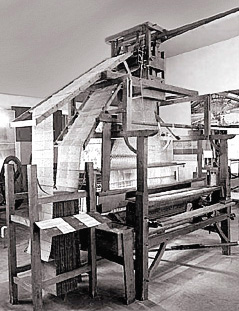

Schon 1728 hatte der französische Mechaniker Falcon gelochte Kartonstreifen zur Steuerung eines Webstuhles eingesetzt. Erfolg war der Erfindung erst mit Joseph-Marie Jacquard beschieden, der 1805 in Lyon einen automatischen Webstuhl baute. Jacquard verwendete gelochte Kartonplatten, die zu einem Band zusammengefügt wurden. Das Lochmuster wurde über Nadeln mechanisch abgetastet und steuerte das Anheben der Kettfäden im Webstuhl.